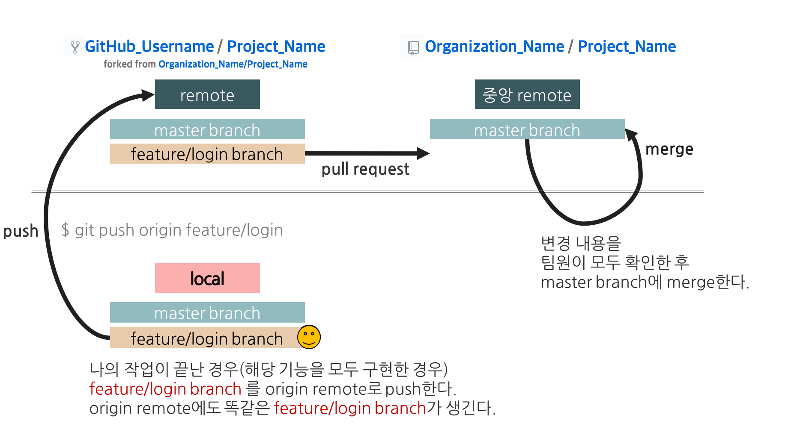
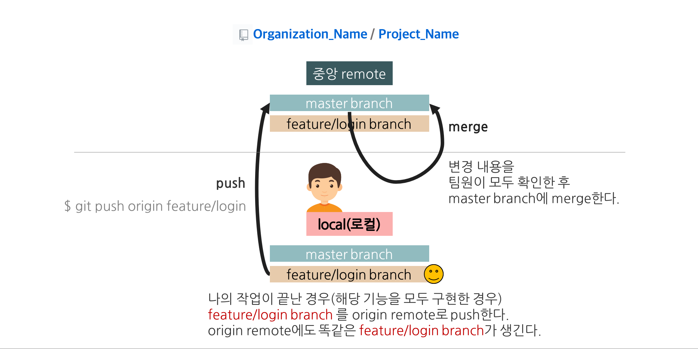
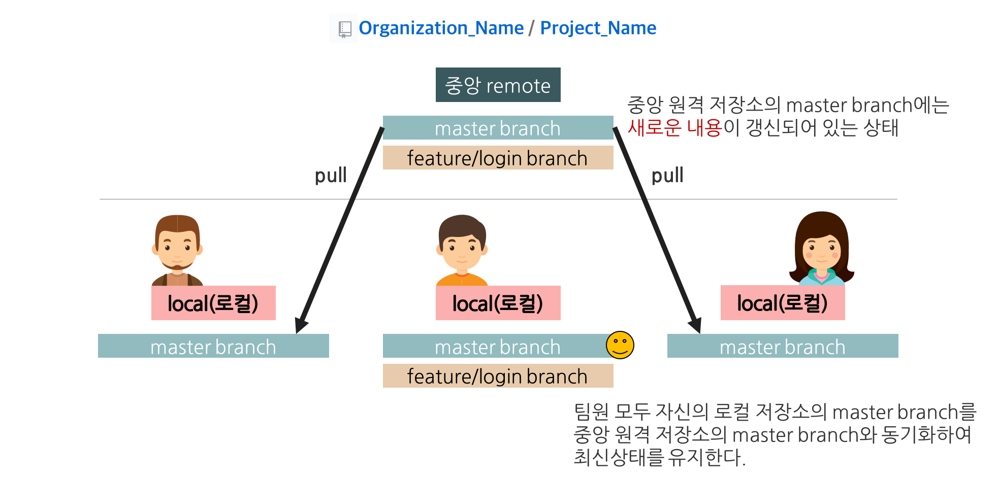

20-11-06 금요일 해커톤
Fastcampus Hackerton 20-11-06 - GD와 아이들
패스트 캠퍼스 해커톤에서 진행한 프로젝트 사이트입니다.
GD와 아이들 해커톤 github


프로젝트 목표
weekly test와 같은 문제풀이를 간편하게 생성하고 풀 수 있도록 하여 학생과 매니저 모두에게 편리함을 제공한다.
서비스 기능
1. 로그인 페이지
- JSON 서버에서 가입 정보를 받아와 로그인을 진행한다.
2. 회원가입 페이지
- 입력된 정보를 서버에 저장한다.
- 매니저와 학생을 분리해 매니저에게는 문제 생성권한을 부여한다.
- 아이디는 4 ~ 12자리 영문 혹은 숫자, 비밀번호는 4자 이상, 이름은 1 ~ 5자리 한글로 입력가능하게 한다.
- 서버 데이터를 통해 기존에 존재하는 아이디인지 존재여부를 확인한다.
3. 링크 페이지
- 매니저에게만 문제생성 버튼을 보여지도록 한다.
- 링크 입력창에 올바른 참여 코드 입력 시, 문제를 풀 수 있는 화면으로 이동하도록 한다.
4. 문제 생성 페이지
- 문제가 생성될 때 새롭게 참여코드가 랜덤으로 생성된다.
- 문제 추가 버튼 클릭 시, 새로운 문제가 추가된다.
- 저장 버튼 클릭 시, 참여코드의 중복을 확인하고 새로운 퀴즈를 생성해 서버에 전송해 저장한다.
- 만약 각 문제의 총 배점이 100점이 아니라면 alert창이 뜨고 100점에 맞출 수 있도록 한다.
- 제출이 완료되면 생성된 참여코드를 알려준다.
5. 문제 풀기 페이지
- 문제를 풀고 제출버튼을 통해 점수를 확인할 수 있다.
- 만약 공란이 있다면 제출을 할 수 없다.
- 왼쪽 상단에 현재 답을 입력한 문제 갯수와 총 문제수를 실시간으로 확인할 수 있다.
- 제출 버튼을 눌렀을 때, 확인 alert창이 뜨고 제출여부를 다시 확인한다.
6. 점수 페이지
- 매니저가 입력한 정답과 학생이 작성한 정답을 비교해 이를 합산한 총 점을 화면에 보여준다.
- 버튼을 통해 해설이나 링크 페이지로 이동할 수 있다.
7. 문제 해설 페이지
- 매니저가 작성한 해설과 답안을 보여준다.
개발기간
1일 (2020.11.06 금요일)
팀원
- 김동찬 - 기획, Javascript 2,3,7 페이지
- 석금용 - 기획, HTML/CSS 및 Javascript 전반적인 진행사항 QA 역할
- 이영상 - 기획, Javascript 1,5 페이지
- 이한슬 - 기획, Javascript 4,6 페이지, github 관리
느낀점
1. 기획단계
아이디어 회의
- Todolist, habit tracker, 쇼핑몰 등 여러가지 아이디어 나오던 중 기존에 weekly test를 응용한 문제를 생성하고 푸는 기능이 담긴 사이트를 만들기로 결정했다.
- 여러가지 아이디어를 구상하는 와중에 하루만에 어느 정도 수준까지 만들 수 있을지에 대한 감이 부족해 금용님에게 의존을 많이 한 것이 아쉬웠다.
github organization 연습
기존 github repository를 만들어 fork해서 작업하는 것이 아닌 github organization을 생성해 함께 branch를 만들어 작업을 했다.
이슈등록, commit message, pull request 시 작성할 메세지 포멧을 통일했다.
차이점
Forking Workflow
Forking Workflow
- 모든 프로젝트 참여자가 개인적인 로컬 저장소와 공개된 자신의 원격 저장소(하나의 중앙 원격 저장소를 각자가 Fork한 것), 즉 두 개씩의 Git 저장소 를 가지는 방식
- 모든 코드 기여자가 하나의 중앙 저장소에 푸시하는 것이 아니라, 각자 자신의 원격 저장소에 푸시하고, 프로젝트 관리자만 다른 개발자들의 기여분을 중앙 원격 저장소에 병합할 수 있다.
- 소규모의 팀에서는 팀원 모두가 프로젝트 관리자가 되어 중앙 원격 저장소를 관리할 수 있다.
- Feature Branch WorkflowFeature Branch Workflow
- Feature Branch Workflow의 핵심 컨셉은 기능별 브랜치를 만들어서 작업하는 것
- 다수의 팀 구성원이 메인 코드 베이스(main)를 중심으로 해서 안전하게 새로운 기능을 개발할 수 있다.
- 유연성이 크고, 소규모 인원의 프로젝트에서 사용하는 협업 방법
2. 작업단계
github를 통한 협업
순서
1
2
3
4
5
6
7
8
9
10
11
12
13
14
15
16
17git clone 주소
github에서 이슈 등록 -> 팀장님에게 알려주기
(#123-로그인구현)
git checkout -b develop
git checkout -b [branch name]
파일에서 코드 작성
git commit - a -m "feat: #123-로그인구현"
(주의! 자신의 브랜치 확인!) git push -u origin [branch name]
-u 옵션: 새로운 기능 브랜치와 동일한 이름으로 중앙 원격 저장소의 브랜치로 추가
github에서 Pull requests 요청
(주의!!) 팀장 develop ← 자신의 브랜치
팀장 - Pull request 받아들이고 합치기
브랜치 develop으로 옮겨서
git pull origin develop
다시 새로운 브랜치 만들어서 작업
다른 팀 발표를 들을 때 의외로 git을 사용하는 부분에서 문제가 생겨 시간을 많이 잡아먹었다고 했는데 다행히 우리팀은 예행연습을 해서 그런지
팀장으로서 github organization 생성, 이슈 확인, pull request를 받고 merge하기를 추가로 담당하게 되었다.
Javascript 코드 구현
- 내가 맡은 부분은